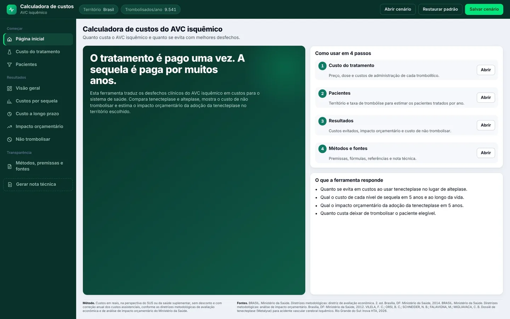
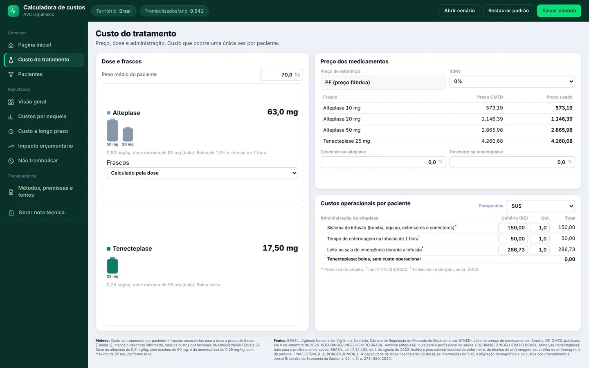
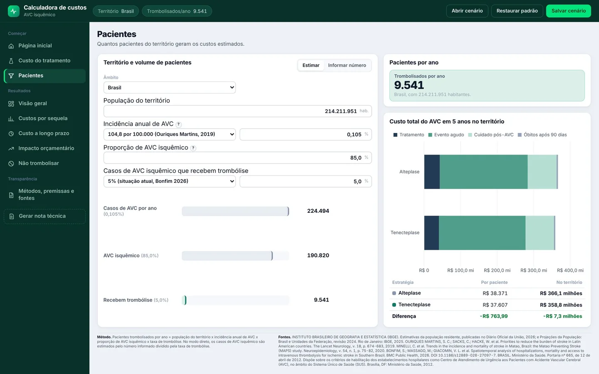
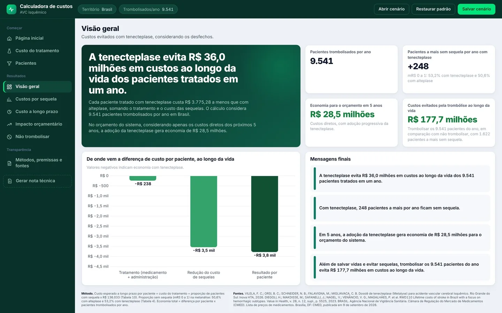
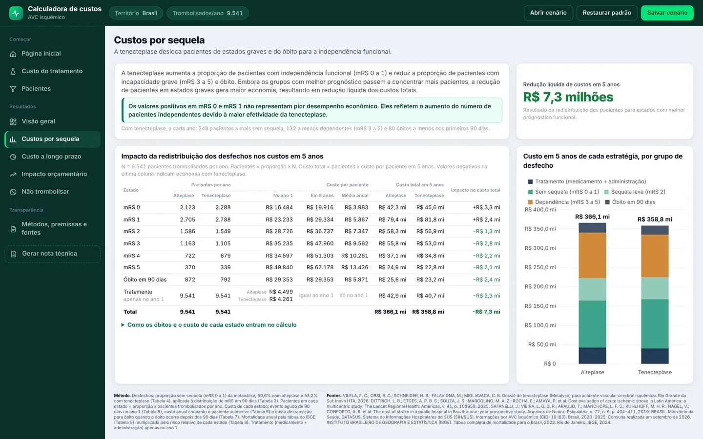
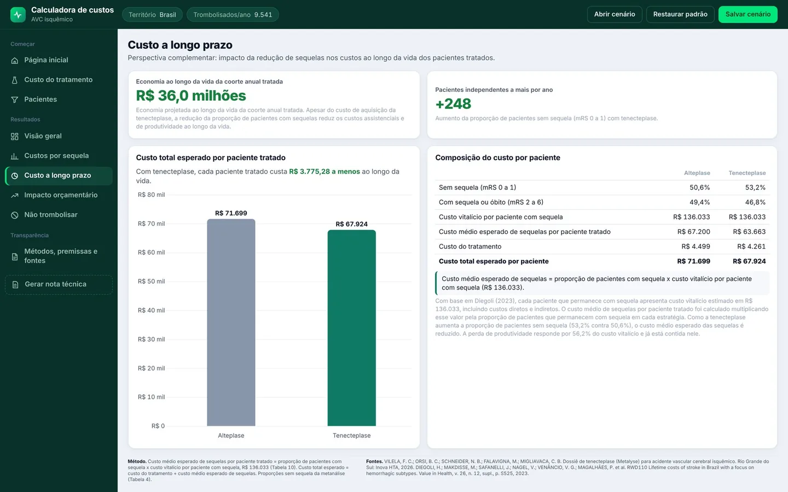
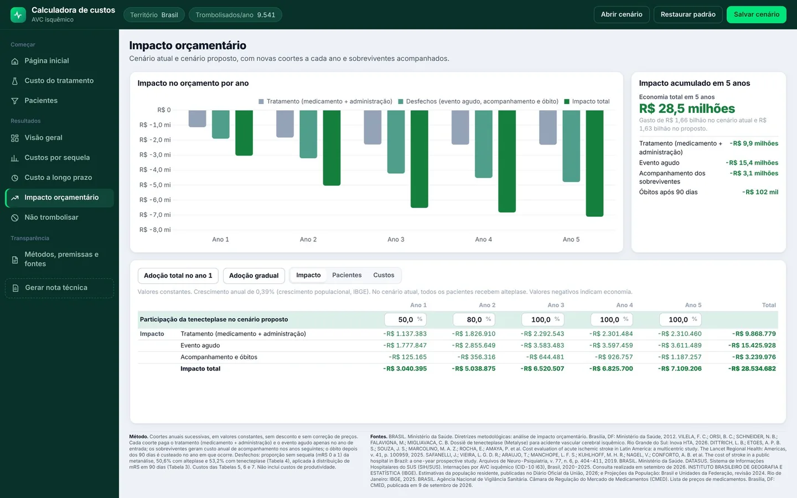
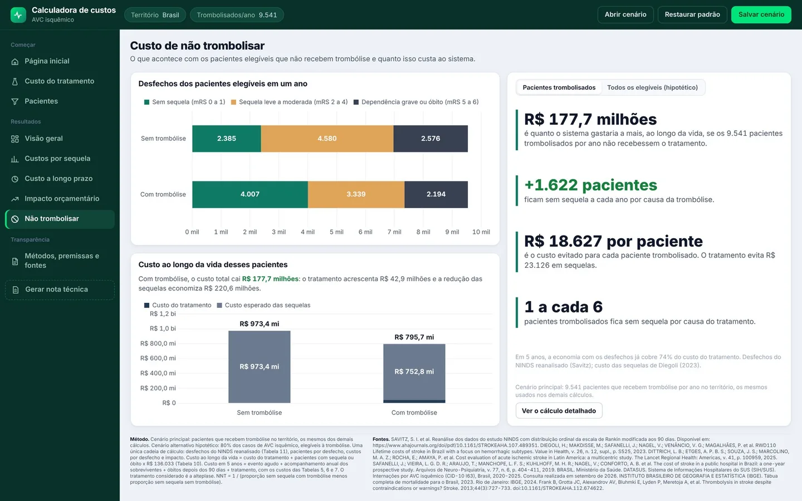
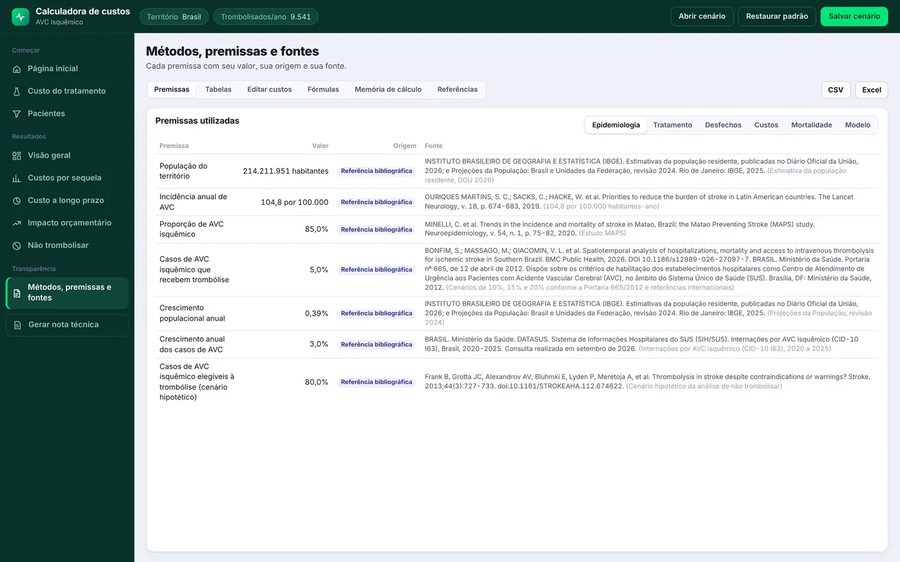
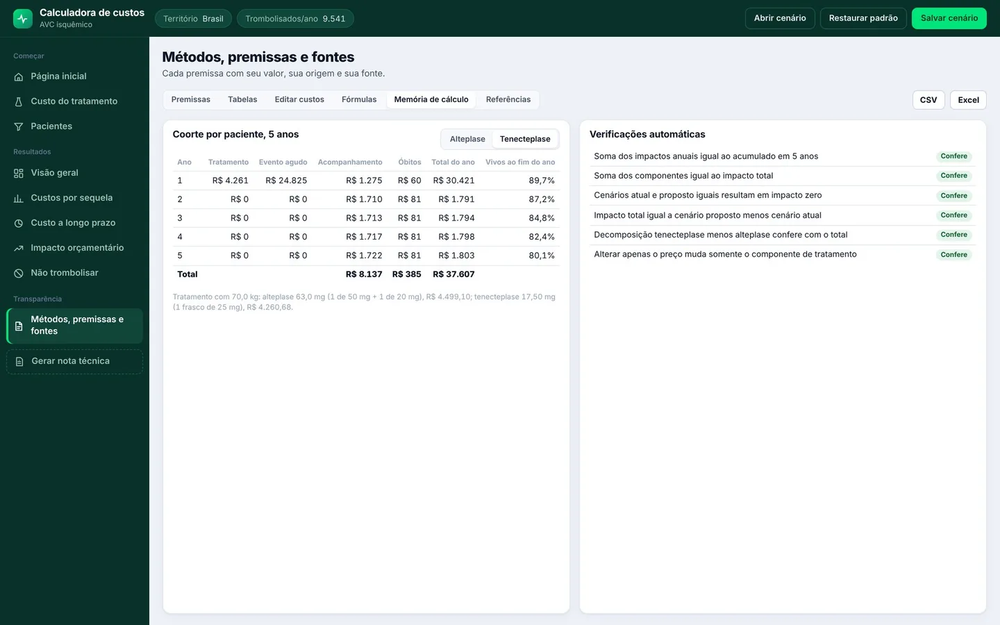

Calculadora de custos do AVC
Calculadora de impacto orçamentário que compara tenecteplase e alteplase no tratamento do AVC isquêmico, considerando dose, administração, sequelas, mortalidade e custo em 5 anos, para o território escolhido. Usada pela equipe de campo em reuniões com secretarias de saúde e hospitais.
- Cliente
- Boehringer Ingelheim
- Público
- Secretarias de saúde e hospitais
- Entrega
- Calculadora web, banco, gerador e nota técnica
- Dados
- CMED/Anvisa, IBGE, DATASUS e 29 referências
Telas
Capturas da calculadora com os parâmetros padrão, Brasil.





















Fluxo das telas
Na barra do topo: abrir cenário, salvar cenário e restaurar o padrão.
Arquitetura e recálculo
Demonstração
Mesmas fórmulas e parâmetros padrão da calculadora: preço fábrica CMED de setembro de 2026, ICMS 0%, perspectiva SUS e paciente de 70 kg.
Fórmulas: pacientes = população × 104,8/100 mil × 0,85 isquêmicos × taxa de trombólise. Custo em 5 anos = tratamento + soma de cada nível da escala de Rankin aos 90 dias × custo do nível (agudo, acompanhamento com mortalidade ajustada e óbitos). A demonstração usa as proporções arredondadas a duas casas e pode diferir da calculadora em poucos reais.
Impacto orçamentário
Brasil, cinco anos. Participação da tenecteplase de 50%, 80% e 100% a partir do terceiro ano. Valores constantes, crescimento de 0,39% ao ano nas novas coortes.
Impacto acumulado de −R$ 28,5 milhões: medicamento +R$ 10,3 milhões, administração −R$ 20,1 milhões, fase aguda −R$ 15,4 milhões, acompanhamento −R$ 3,1 milhões.
Funcionalidades
- Telas de análiseCusto do tratamento, pacientes, visão geral, custos por sequela, longo prazo, impacto orçamentário, custo de não trombolisar e métodos.
- TerritórioBrasil, UF, município com busca ou população digitada; ICMS, desconto e perspectiva SUS ou saúde suplementar.
- Dose e frascosCombinação de frascos de alteplase que cobre a dose com menor sobra e menor custo.
- Mortalidade por sequelaTábua de mortalidade do IBGE ajustada por risco relativo de cada nível da escala de Rankin.
- Memória de cálculoCada número aberto em fórmula e referência, com 29 fontes citadas e edição de custos na sessão.
- Atualização de preçosGerador em Python importa a nova lista CMED e a população do IBGE a partir de planilha.
- Cenários e exportaçãoCenários salvos, exportação para Excel e CSV e nota técnica pronta para imprimir em PDF.
- CelularVersão móvel com barra de navegação inferior.
Verificações
Executadas a cada recálculo.
- Soma dos anosO total de 5 anos é igual à soma dos anos.
- Soma dos componentesMedicamento, administração, fase aguda, acompanhamento e óbitos somam o impacto.
- Cenários iguaisCenário proposto igual ao atual resulta em impacto zero.
- DiferençaImpacto igual a proposto menos atual.
- DecomposiçãoTratamento, incapacidade e mortalidade somam a diferença por paciente.
- PreçoAlterar o preço muda apenas o componente de tratamento.